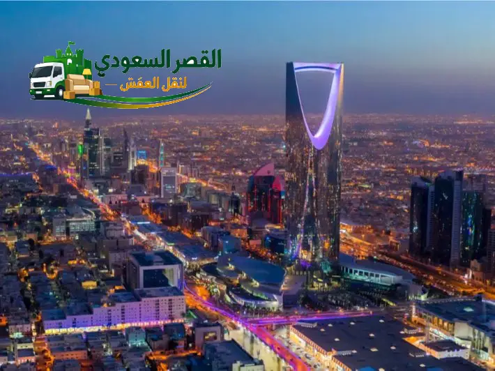

تفاصيل وتجهيزات مسار جدة - الرياض
الرياض هي الوجهة الأكثر طلباً لنقل العفش. نمتلك أسطولاً يربط جدة بالرياض بشكل منتظم مما يمكننا من تقديم أسعار تنافسية وخدمة موثوقة يومياً.
اختيار المركبة المناسبة وتثبيت المنقولات بشكل صحيح هما سر نجاح النقل بين المدن. نضمن توفير سيارات دينا أو شاحنات مغلقة تناسب حجم عفشك لحمايته من العوامل الجوية على الطرق السريعة.
ضمان وحماية المنقولات
نحن في شركة القصر السعودي نلتزم بأعلى معايير الحماية. نقوم بتغليف العفش بأفضل المواد وتثبيته بعناية داخل الشاحنة لتقليل مخاطر التلف والاهتزاز أثناء الرحلة الطويلة. نحن مسؤولون عن تسليم أثاثك سليماً كما استلمناه.
مسار النقل البري من جدة إلى الرياض
خدمة نقل العفش من جدة إلى الرياض
تُعد خدمة نقل عفش من جدة إلى الرياض من الخدمات الرئيسية التي تقدمها شركة القصر السعودي لنقل المنقولات والأثاث بين المنطقة الغربية والعاصمة الرياض. تخدم هذه الخدمة العائلات والأفراد والشركات الراغبين في الانتقال السلس، مع توفير كافة خيارات التجهيز والفك والتغليف والشحن والتفريغ في الموقع الجديد.
معلومات رحلة النقل: جدة إلى الرياض
* المدة قد تختلف حسب حركة المرور والتوقفات وظروف الطريق.
تستوعب خدمة نقل أثاث من جدة للرياض مختلف الأحجام والاحتياجات، سواء كانت المنقولات تخص شققاً سكنية أو فللاً كاملة أو مكاتب ومقرات شركات. وتعتمد العملية على التنسيق المسبق لتحديد مواصفات الأثاث ونوعية السكن ومواعيد الاستلام بجدة والتسليم بالرياض بما يتناسب مع جدول العميل.
تتيح الرحلة بين المدينتين حلول شحن منظمة تحافظ على استقرار المنقولات أثناء السفر. ويمكنك الاطلاع على خيارات التنقل بين مختلف المناطق والمدن عبر صفحة نقل العفش بين جدة ومدن المملكة.

كيف تتم رحلة نقل الأثاث من جدة إلى الرياض؟
تخضع رحلة النقل لمجموعة من المراحل التشغيلية المنظمة لضمان وصول كافة القطع بسلامة وكفاءة من جدة إلى الرياض:
1. تحديد تفاصيل النقل والاستلام من جدة
يتم الاستفسار عن موقع الاستلام في جدة، نوع السكن (شقة، فيلا، مكتب)، حجم الأثاث المنقول، والموعد المحدد للتحميل.
2. تقدير حجم الأثاث والمتطلبات
تحديد كمية الحمولة والشاحنة المناسبة، وتوفير عدد العمالة والنجارين اللازمين، وتجهيز مواد التغليف المطلوبة.
3. فك الأثاث عند الحاجة
فك غرف النوم الخشبية، الدواليب، الطاولات، والمطابخ والأجهزة الكبيرة لتسهيل حمايتها وشحنها.
4. تغليف وتجهيز المنقولات
استخدام خامات التغليف لحماية الخشب، الزجاج، الشاشات، والأجهزة الكهربائية من الغبار والاحتكات على الطريق.
5. تحميل الأثاث وتثبيته
ترتيب الحمولة داخل الشاحنة بتوزيع متوازن وتثبيت القطع الثقيلة بالحبال لتجنب الحركة أثناء المسار.
6. نقل الأثاث من جدة إلى الرياض
انطلاق الشاحنة عبر طريق الشحن بين المدينتين مع الالتزام بتعليمات السير الآمنة للحفاظ على سلامة الشحنة.
7. التفريغ في الرياض
عند الوصول إلى الموقع بالرياض، يتم تنزيل المنقولات وإدخالها للعقار ورفعها للغرف المحددة.
8. إعادة التركيب وترتيب الأثاث
تجميع القطع المفككة كغرف النوم والمطابخ واختبار سلامتها، وإعادة الترتيب النهائي بحسب اختيار العميل.
تجهيز الأثاث في جدة قبل الانطلاق إلى الرياض
تبدأ جودة العملية في مرحلة التجهيز الأولي بجدة، حيث يتم فرز قطع الأثاث وتصنيفها بحسب حجمها وحساسيتها. يتم التعامل مع القطع الزجاجية والشاشات التلفزيونية بعناية فائقة وتغليفها مبكرًا لوقايتها من التلف.
يتضمن تجهيز الأثاث قبل النقل فك القطع الخشبية الضخمة وحفظ كافة البراغي والقطع المعدنية الصغرى داخل أكياس خاصة مرقمة ومربوطة بالقطع التابعة لها. كما يتم تجهيز الأجهزة الكهربائية وتأمين وصلاتها وأبوابها لضمان استقرارها داخل الشاحنة قبل التحميل.
فك وتركيب الأثاث من جدة إلى الرياض
يسهم فك الأثاث في تقليل المساحة المستهلكة داخل صندوق الشاحنة ويحمي الهياكل الخشبية من الانحناء أو التفكك أثناء الرحلة الطويلة. يتولى فنيون ونجارون متخصصون تفكيك غرف النوم، الدواليب السحابية، الطاولات، والمطابخ الخشبية والألوميتال.
تتم مرحلة **الفك في جدة** بنظام ترتيب وتسجيل للقطع، تليها مرحلة **التركيب في الرياض** فور وصول المنقولات؛ حيث يعيد النجارون تجميع الدواليب والأسرة وتثبيتها بدقة واختبار سلاسة حركة الأبواب والأدراج. يمكنك الاطلاع على تفاصيل أكثر عبر صفحة تفاصيل خدمة فك وتركيب الأثاث.
تغليف الأثاث قبل نقله من جدة إلى الرياض
يساعد تغليف الأثاث قبل نقله من جدة إلى الرياض في وقاية المنقولات من الغبار والخدوش والتغيرات الجوية أثناء المسافة بين المدينتين. وتتنوع مواد التغليف بحسب نوع الأثاث:
تغليف الأثاث الخشبي
تغطية ألواح الدواليب والأسرة بالكرتون المقوى والشرائط اللاصقة لحماية الأسطح والحواف من الخدوش.
حماية الزجاج والشاشات
تغليف الواجهات الزجاجية والمريات والشاشات بالبلاستيك الفقاعي (Bubble Wrap) وتثبيتها داخل كراتين مقواة.
تغليف الأجهزة والقطع الحساسة
استخدام النايلون الاستريتش لتأمين الأجهزة الكهربائية والمستندات والقطع الحساسة ضد الأتربة والغبار.
حماية الزوايا والأسطح
وضع كرتون مقوى أو واقيات فوم على زوايا الكنب والمطابخ لمنع احتكاكها بجدران المبنى أو الشاحنة.
يمكنك معرفة المزيد عن خامات وطرق التغليف المختلفة المتاحة عبر زيارة صفحة تفاصيل تغليف الأثاث.
شاحنات نقل العفش من جدة إلى الرياض
تُستخدم في رحلات الشحن بين المدن شاحنات مغلقة ومخصصة لحماية المنقولات من أشعة الشمس والأتربة والظروف الجوية على الطريق السريع. ويتم اختيار الشاحنة المناسبة بناءً على حجم الأثاث المنقول.
اختيار الشاحنة حسب حجم الأثاث
تتوفر دينا نقل بمقاسات متعددة تتراوح من الشاحنات الصغيرة لنقل أثاث الشقق والمكاتب الصغرى، وحتى الشاحنات الكبيرة المخصصة لنقل عفش الفلل والمؤسسات.
تثبيت المنقولات أثناء الرحلة
تُزود صناديق الشاحنات بأحزمة تثبيت ومقابض جدارية لمنع تحرك الأجهزة الكبيرة أو الكراتين أثناء الحركة والتوقف.
النقل الخاص والنقل المجمع
يمكن للعميل اختيار النقل الخاص المباشر لشاحنة مستقلة، أو النقل المجمع للقطع القليلة بحسب التنسيق المتاح ورغبة العميل.
متى يحتاج نقل الأثاث إلى ونش؟
يُستخدم ونش رفع العفش عند النقل إلى الرياض في حالات خاصة لتسهيل تنزيل أو رفع المنقولات الكبيرة وتفادي المخاطر، ومنها:
- الأدوار المرتفعة: في المباني السكنية العالية التي يتطلب نقل العفش منها وإليها استخدام رافعة خارجية.
- القطع الضخمة والثقيلة: كالرخام الكبير، الكنب المترابط، أو الأجهزة التي يصعب حملها عبر السلالم.
- السلالم والمداخل الضيقة: لمنع خدش الحوائط أو كسر أطراف الأثاث عند صعوبة المناورة في الممرات.
نقل الشقق والفلل والمكاتب من جدة إلى الرياض
تتدرج خدمات النقل لتناسب مختلف أنماط المساحات والعقارات:
نقل أثاث الشقق
تغطية كافة احتياجات نقل شقق من جدة إلى الرياض لشحن غرف النوم، المجالس، والأجهزة المنزلية بشاحنات مناسبة وتنسيق مرن.
نقل أثاث الفلل
خدمات متكاملة لـ نقل فلل من جدة إلى الرياض تشمل الشاحنات الكبيرة وطاقم نجارة وتغليف مخصص للتعامل مع كميات الأثاث الضخمة.
نقل المكاتب والشركات
حلول مخصصة لـ نقل مكاتب من جدة إلى الرياض ونقل شركات من جدة إلى الرياض لشحن الأثاث المكتبي والأجهزة والملفات بدون تعطيل للأعمال.
مناطق الاستلام في جدة والتسليم في الرياض
تتيح الخدمة نقل الأثاث من مختلف أحياء ومناطق مدينة جدة والتوصيل المباشر لكافة أحياء مدينة الرياض.
مناطق الاستلام بجدة: تشمل مختلف الأحياء الشمالية والوسطى والجنوبية (مثل الشاطئ، الصفا، الحمدانية، النعيم، المروة، الروضة، السلامة، العزيزية).
مناطق التسليم بالرياض: تغطي مختلف الأحياء (مثل الملقا، الصحافة، النخيل، العارض، الياسمين، الروضة، السليمانية، العليا، وغيرها من أحياء الشمال والشرق والوسط والجنوب).
أسعار نقل العفش من جدة إلى الرياض
تتفاوت أسعار نقل العفش من جدة إلى الرياض بناءً على التفاصيل الخاصة بكل عملية نقل، حيث يعتمد التقدير المالي على المتطلبات التشغيلية الفعلية وحجم المنقولات والخدمات المرافقة.
يمكنك التواصل معنا مباشرة لتقديم معلومات حجم الأثاث والموقعين للحصول على تقدير واضح للتكلفة، أو الاطلاع على مزيد من العوامل المؤثرة عبر صفحة تفاصيل تكلفة نقل العفش.
ما الذي يحدد تكلفة نقل العفش من جدة إلى الرياض؟
تتحدد تكلفة نقل العفش من جدة إلى الرياض وفقًا لعدة عوامل أساسية:
- حجم المنقولات: كمية الأثاث والكراتين المنقولة تؤثر مباشرة في حجم الشاحنة اللازمة.
- عدد الغرف: عدد الغرف المنقولة يحدد عدد العمالة والوقت المستغرق في التحميل.
- نوع السكن: شقة سكنية، فيلا كاملة، أو مقر شركة تجارية.
- التغليف: كمية ونوعية مواد الحماية المستخدمة (فقاعات، كرتون، نايلون).
- الفك والتركيب: مدى الحاجة لفك غرف النوم والمطابخ والأجهزة وإعادة تجميعها بالرياض.
- الونش: الحاجة لاستخدام رافعة هيدروليكية للأدوار العليا في الاستلام أو التسليم.
- نوع الشاحنة: دينا نقل صغيرة، شاحنة مقفلة كبيرة، أو شحن خاص مقابل مجمع.
- طبيعة الوصول للموقعين: سهولة الوقوف ورقم الدور ووجود مصعد بالمبنى.
ماذا يحدث عند وصول العفش إلى الرياض؟
فور وصول الشاحنة إلى الموقع الجديد بمدينة الرياض، تبدأ عملية التسليم والتفريغ وفق الترتيب التالي:
- وصول الشاحنة: فحص موقع التوقف وتأمين المخرج والتفريغ.
- تفريغ المنقولات: تنزيل القطع والكراتين بنظام يمنع التزاحم أو التداخل.
- إدخال الأثاث: نقل المنقولات لداخل العقار وتوزيعها على الغرف المحددة.
- رفع القطع عند الحاجة: استخدام المصعد أو السلالم أو الونش لإيصال الأثاث للأدوار العليا.
- تركيب الأثاث: إعادة تجميع غرف النوم والدواليب والمطابخ والقطع المفككة.
- ترتيب الغرف: رصف الكنب والأثاث بمواقع الاستخدام بناءً على طلب العميل.
- مراجعة المنقولات: التأكد من سلامة كافة القطع والتأكد من استكمال كافة الخدمات.
لماذا تختار خدمة متخصصة للنقل بين جدة والرياض؟
يسهم اختيار خدمة متخصصة للنقل بين المدن في تيسير الرحلة وتفادي المخاطر التشغيلية، وذلك عبر الميزات التالية:
- تنظيم الاستلام والتسليم: تنسيق المواعيد والترتيبات بين موقعي جدة والرياض بدقة.
- تجهيز الحمولة: استخدام خامات تغليف مناسبة لحماية الخشب والزجاج من الحركة على الطريق.
- اختيار الشاحنة: توفير شاحنات مقفلة تناسب حجم المنقولات وتضمن سلامتها.
- حماية الأثاث: الاعتماد على عمالة مدربة لنقل القطع الثقيلة دون خدوش للحوائط أو الأثاث.
- تنسيق الفك والتغليف والتركيب: تنفيذ مراحل النقل كعملية متكاملة ومستمرة.
التخزين قبل التسليم في الرياض
في بعض الحالات قد يحتاج العميل إلى تخزين العفش قبل التسليم في الرياض لعدم جاهزية المسكن أو العقار الجديد لاستقبال الأثاث فوراً. وتتوفر خيارات حفظ المنقولات في مستودعات مخصصة ومؤمنة لفترات مؤقتة لحين تحديد موعد التفريغ النهائي.
يمكنك معرفة الشروط والتفاصيل الخاصة بحفظ وتخزين الأثاث عبر صفحة خدمة تخزين الأثاث.
أنواع الأثاث التي يمكن نقلها
تتعامل الخدمة مع كافة مكونات الأثاث المنزلي والمكتبي بعناية:
أثاث غرف النوم
الأسرة، الدواليب، التسريحات، والقطع الخشبية بمختلف أحجامها.
المجالس والكنب
أطقم الكنب، المجالس العربية، والفرش مع التغليف المحكم لمنع الاتساخ.
المطابخ
دواليب المطابخ الخشبية والألوميتال والأجهزة المرافقة.
الأجهزة
الثلاجات، الغسالات، المكيفات، والمجففات بعد تأمينها وفصلها.
الشاشات والزجاج
الشاشات التلفزيونية، المريات، الواجهات الزجاجية، والتحف.
المكاتب
طاولات العمل، الكراسي المكتبية، كبائن الملفات، وأجهزة الحاسب.
نصائح قبل نقل العفش من جدة إلى الرياض
لضمان رحلة نقل سلسة ومنظمة، يُنصح بمراعاة الخطوات التالية قبل موعد التحميل:
- تحديد القطع التي تحتاج فكًا: معرفة غرف النوم والمطابخ التي تتطلب تفكيكًا مسبقًا.
- فصل الأجهزة الكهربائية: تفريغ الثلاجات وفصل المكيفات والغسالات قبل وصول طاقم النقل.
- التخلص من الأغراض غير المرغوبة: فرز المنقولات لتخفيف حجم الحمولة وتسهيل الترتيب.
- تجهيز المستندات والأشياء الثمينة: الاحتفاظ بالأوراق الرسمية والمجوهرات والأشياء الشخصية في حقائب خاصة تنقل مع العميل مباشرة.
- التأكد من جاهزية موقع التسليم: التأكد من إمكانية دخول الشاحنة وفتح السكن بالرياض قبل انطلاق الرحلة.
أسئلة شائعة عن نقل العفش من جدة إلى الرياض
إجابات عن أبرز الاستفسارات المتعلقة بنقل العفش والأثاث من جدة إلى الرياض:
تختلف مدة الرحلة حسب حجم المنقولات وترتيبات الاستلام والتسليم وظروف الطريق، ويتم تحديد الموعد المتوقع عند تنسيق الخدمة.
تتحدد التكلفة بناءً على حجم المنقولات، عدد الغرف، نوع السكن، خامات التغليف، الحاجة لخدمات الفك والتركيب أو الونش، ونوع الشاحنة وطبيعة الوصول للموقعين.
نعم، تتضمن الخدمة فك الأثاث بجدة وإعادة تركيبه في الرياض لغرف النوم والدواليب والمطابخ والأجهزة بحسب الاتفاق.
نعم، يتم استخدام مواد التغليف المناسبة مثل البلاستيك الفقاعي والكرتون المقوى والشرائط اللاصقة والنايلون لحماية المنقولات أثناء السفر.
نعم، تشمل الخدمة نقل أثاث منازل الشقق والفلل بالإضافة إلى نقل الأثاث والمعدات للمكاتب والشركات والمؤسسات.
نعم، تتوفر شاحنات نقل مخصصة ومغلقة بأحجام مختلفة تناسب كمية الأثاث وتوفر الحماية المناسبة طوال المسار.
يُستعان بونش الرفع في حالات الأدوار العليا أو المباني ذات السلالم والمداخل الضيقة لتسهيل تنزيل أو رفع القطع الكبيرة والثقيلة.
نعم، تتوفر خيارات حفظ وتخزين المنقولات مؤقتًا في مستودعات مخصصة بحسب رغبة العميل قبل إتمام التسليم النهائي.
نعم، عند وصول الشاحنة إلى الرياض يتم تنزيل الأثاث وتفريغه بالموقع وإعادة تركيب غرف النوم والقطع المفككة وترتيبها.
يمكن حجز الخدمة بالاتصال برقم الهاتف 0540026747 أو المراسلة عبر الواتساب لتنسيق تفاصيل الاستلام وتحديد الموعد.
احجز خدمة نقل العفش من جدة إلى الرياض
تواصل معنا الآن للحصول على تفاصيل الرحلة وتنسيق موعد الاستلام والتوصيل بسهولة وأمان.